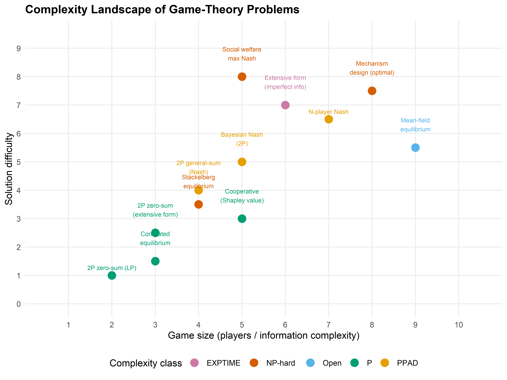
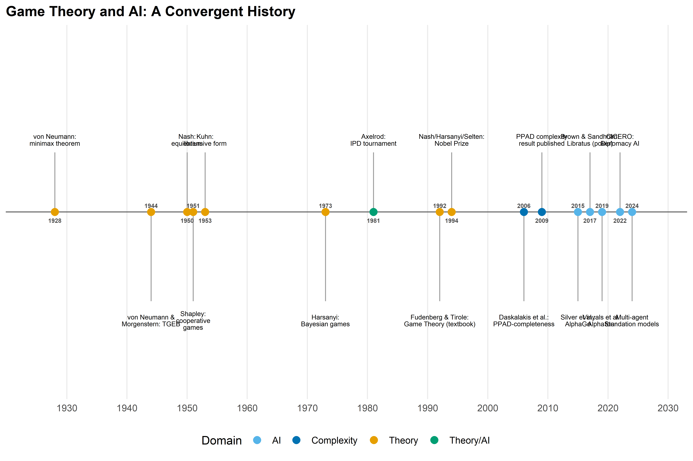

# Taxonomy of game-theory problems with complexity classifications
complexity_data <- tibble(
problem = c(
"2P zero-sum (LP)", "2P zero-sum\n(extensive form)",
"2P general-sum\n(Nash)", "N-player Nash",
"Bayesian Nash\n(2P)", "Correlated\nequilibrium",
"Mechanism\ndesign (optimal)", "Extensive form\n(imperfect info)",
"Mean-field\nequilibrium", "Cooperative\n(Shapley value)",
"Social welfare\nmax Nash", "Stackelberg\nequilibrium"
),
game_size = c(2, 3, 4, 7, 5, 3, 8, 6, 9, 5, 5, 4),
difficulty = c(1, 2.5, 4, 6.5, 5, 1.5, 7.5, 7, 5.5, 3, 8, 3.5),
complexity_class = c("P", "P", "PPAD", "PPAD", "PPAD",
"P", "NP-hard", "EXPTIME", "Open",
"P", "NP-hard", "NP-hard"),
chapter = c(3, 5, 3, 3, 8, 4, 11, 5, 28, 10, 3, 6)
)43 The Future of Strategy
Abstract
Emerging frontiers in strategic AI: computational complexity, multi-agent foundation models, and responsible deployment.
Keywords
future, computational complexity, multi-agent AI, responsible AI, open problems
44 The Future of Strategy
Learning objectives
- Identify the major open problems at the intersection of game theory and AI.
- Understand the computational complexity landscape of game-solving algorithms.
- Recognize the key milestones in the convergence of game theory and artificial intelligence.
- Articulate principles for responsible deployment of strategic AI systems.
44.1 Motivation
This book has covered four decades of ideas — from Nash equilibrium to multi-agent reinforcement learning, from mechanism design to cooperative AI. But the field is accelerating. Foundation models are being deployed in multi-agent settings, AI systems negotiate on behalf of humans, and algorithmic decision-makers interact in markets, infrastructure, and governance.
This capstone chapter surveys the frontier: what has been solved, what remains open, and what practitioners should consider as they build the next generation of strategic AI systems.
44.2 Theory
44.2.1 Computational complexity of game solving
Not all games are equally hard to solve. The computational complexity of finding equilibria varies dramatically with the game’s structure.
Complexity Classes for Game Solutions
- Polynomial (P): Two-player zero-sum games can be solved via linear programming in polynomial time.
- PPAD-complete: Finding a Nash equilibrium in two-player general-sum games is PPAD-complete — believed to be hard but not NP-hard (Daskalakis et al., 2009).
- NP-hard: Finding a Nash equilibrium that satisfies additional properties (e.g., maximum social welfare) is NP-hard.
- EXPTIME: Solving extensive-form games with imperfect information grows exponentially in the game tree size.
These complexity results have practical implications: for large games, exact equilibrium computation is infeasible, and practitioners must rely on approximation algorithms, learning dynamics, or structural simplifications.
44.2.2 Emerging frontiers
Multi-agent foundation models. Large language models are increasingly deployed in multi-agent settings — negotiation, debate, collaborative problem-solving. The game-theoretic properties of these interactions (equilibrium selection, emergent cooperation, strategic manipulation) are largely unexplored.
AI negotiation. Automated negotiation systems already operate in e-commerce, resource allocation, and diplomacy simulations. A key open question is whether foundation-model negotiators converge to game-theoretically rational strategies or exhibit systematic biases.
AI governance. As AI systems make decisions with societal impact, governance frameworks must account for strategic interactions between AI developers, deployers, regulators, and affected populations. Mechanism design (Chapter 35) provides the theoretical foundation.
44.2.3 Open problems in MARL
Multi-agent reinforcement learning faces several unsolved challenges:
- Non-stationarity. Each agent’s environment is changing because other agents are learning simultaneously.
- Credit assignment. In cooperative settings, attributing team success to individual agents is hard.
- Scalability. The joint action space grows exponentially with the number of agents.
- Equilibrium selection. Learning algorithms may converge to different equilibria depending on initialization.
- Safety and alignment. Ensuring that learned policies satisfy safety constraints in multi-agent settings is an open problem connecting to Chapter 42.
44.2.4 Responsible deployment
Deploying strategic AI systems requires attention to:
- Transparency: Can stakeholders understand the system’s strategy?
- Fairness: Does the system treat all participants equitably (Chapter 41)?
- Accountability: Who is responsible when a strategic AI causes harm?
- Robustness: Does the system behave well under adversarial or out-of-distribution conditions?
44.3 Implementation in R
44.3.1 Complexity landscape of game-theory problems
p1 <- ggplot(complexity_data,
aes(x = game_size, y = difficulty, colour = complexity_class)) +
geom_point(size = 4) +
geom_text(aes(label = problem), size = 2.5, vjust = -1.2,
show.legend = FALSE) +
scale_colour_manual(
values = c("P" = okabe_ito[3], "PPAD" = okabe_ito[1],
"NP-hard" = okabe_ito[6], "EXPTIME" = okabe_ito[7],
"Open" = okabe_ito[2]),
name = "Complexity class"
) +
scale_x_continuous(
name = "Game size (players / information complexity)",
breaks = 1:10,
limits = c(0.5, 10.5)
) +
scale_y_continuous(
name = "Solution difficulty",
breaks = 0:9,
limits = c(0, 9.5)
) +
labs(title = "Complexity Landscape of Game-Theory Problems") +
theme_publication()
p1
save_pub_fig(p1, "future-complexity-landscape", width = 8, height = 6)
44.3.2 Timeline of game theory and AI convergence
milestones <- tibble(
year = c(1928, 1944, 1950, 1951, 1953, 1973, 1981, 1992,
1994, 2006, 2009, 2015, 2017, 2019, 2022, 2024),
event = c(
"von Neumann:\nminimax theorem",
"von Neumann &\nMorgenstern: TGEB",
"Nash:\nequilibrium",
"Shapley:\ncooperative\ngames",
"Kuhn:\nextensive form",
"Harsanyi:\nBayesian games",
"Axelrod:\nIPD tournament",
"Fudenberg & Tirole:\nGame Theory (textbook)",
"Nash/Harsanyi/Selten:\nNobel Prize",
"Daskalakis et al.:\nPPAD-completeness",
"PPAD complexity\nresult published",
"Silver et al.:\nAlphaGo",
"Brown & Sandholm:\nLibratus (poker)",
"Vinyals et al.:\nAlphaStar",
"CICERO:\nDiplomacy AI",
"Multi-agent\nfoundation models"
),
domain = c("Theory", "Theory", "Theory", "Theory", "Theory",
"Theory", "Theory/AI", "Theory", "Theory",
"Complexity", "Complexity", "AI", "AI", "AI", "AI", "AI")
)# Alternate y positions for readability
milestones <- milestones |>
mutate(
y_pos = rep(c(1, -1), length.out = n()) * rep(c(1, 1.5), length.out = n()),
era = case_when(
year <= 1960 ~ "Classical foundations",
year <= 2000 ~ "Maturation",
year <= 2015 ~ "Computational turn",
TRUE ~ "AI era"
)
)
p2 <- ggplot(milestones) +
# Timeline axis
geom_hline(yintercept = 0, colour = "grey40", linewidth = 0.5) +
# Stems
geom_segment(aes(x = year, xend = year, y = 0, yend = y_pos * 0.7),
colour = "grey60", linewidth = 0.4) +
# Points on the timeline
geom_point(aes(x = year, y = 0, colour = domain), size = 3) +
# Event labels
geom_text(aes(x = year, y = y_pos * 0.85, label = event),
size = 2.2, lineheight = 0.85) +
# Year labels
geom_text(aes(x = year, y = y_pos * 0.05 + ifelse(y_pos > 0, -0.15, 0.15),
label = year),
size = 2, colour = "grey30", fontface = "bold") +
scale_colour_manual(
values = c("Theory" = okabe_ito[1], "Theory/AI" = okabe_ito[3],
"Complexity" = okabe_ito[5], "AI" = okabe_ito[2]),
name = "Domain"
) +
scale_x_continuous(breaks = seq(1930, 2030, 10), limits = c(1925, 2028)) +
labs(title = "Game Theory and AI: A Convergent History") +
theme_publication() +
theme(axis.text.y = element_blank(),
axis.title = element_blank(),
axis.ticks.y = element_blank(),
panel.grid.major.y = element_blank(),
panel.grid.minor = element_blank()) +
coord_cartesian(ylim = c(-2, 2))
p2
save_pub_fig(p2, "future-timeline", width = 9, height = 6)
44.4 Worked example
We summarize the taxonomy of games, solution concepts, and computational complexity encountered throughout this book.
# Build a taxonomy table
taxonomy <- tibble(
part = c(rep("Foundations", 4), rep("Dynamic Games", 3),
rep("Tic. & Info.", 3), rep("Multi-Agent", 3),
rep("Advanced", 3), rep("Ethics", 3)),
game_type = c(
"Normal form (2P)", "Zero-sum", "Potential games", "Cooperative",
"Extensive form", "Repeated games", "Stochastic games",
"Bayesian games", "Mechanism design", "Auctions",
"MARL", "Evolutionary", "Mean-field",
"Network games", "Matching markets", "Bargaining",
"Social welfare", "Fairness games", "Alignment games"
),
solution_concept = c(
"Nash eq.", "Minimax", "Pure Nash", "Shapley value",
"SPE / backward ind.", "Folk theorem", "Markov perfect",
"BNE", "DSIC / BIC", "Dominant strategy",
"Convergence", "ESS", "MFE",
"Network Nash", "Stable matching", "Nash bargaining",
"SWF optimum", "Constrained opt.", "Program eq."
),
complexity = c(
"PPAD", "P", "P (if exists)", "P",
"P (perf. info)", "Depends", "NP-hard (general)",
"PPAD", "NP-hard (optimal)", "P (single-item)",
"No guarantee", "P (2x2)", "Open",
"PPAD (general)", "P (Gale-Shapley)", "P (2P)",
"Varies", "NP-hard", "Open"
),
players = c(
"2", "2", "N", "N",
"2+", "2+", "2+",
"2+", "N+1", "N+1",
"N", "Large", "Continuum",
"N (network)", "2 sides", "2",
"N", "N + regulator", "2"
)
)
cat("=== Taxonomy of Games in This Book ===\n\n")#> === Taxonomy of Games in This Book ===# Display as a gt table
taxonomy |>
gt(groupname_col = "part") |>
cols_label(
game_type = "Game Type",
solution_concept = "Solution Concept",
complexity = "Complexity",
players = "Players"
) |>
tab_header(title = "Taxonomy of Strategic Interactions") |>
tab_options(table.font.size = px(12))| Taxonomy of Strategic Interactions | |||
|---|---|---|---|
| Game Type | Solution Concept | Complexity | Players |
| Foundations | |||
| Normal form (2P) | Nash eq. | PPAD | 2 |
| Zero-sum | Minimax | P | 2 |
| Potential games | Pure Nash | P (if exists) | N |
| Cooperative | Shapley value | P | N |
| Dynamic Games | |||
| Extensive form | SPE / backward ind. | P (perf. info) | 2+ |
| Repeated games | Folk theorem | Depends | 2+ |
| Stochastic games | Markov perfect | NP-hard (general) | 2+ |
| Tic. & Info. | |||
| Bayesian games | BNE | PPAD | 2+ |
| Mechanism design | DSIC / BIC | NP-hard (optimal) | N+1 |
| Auctions | Dominant strategy | P (single-item) | N+1 |
| Multi-Agent | |||
| MARL | Convergence | No guarantee | N |
| Evolutionary | ESS | P (2x2) | Large |
| Mean-field | MFE | Open | Continuum |
| Advanced | |||
| Network games | Network Nash | PPAD (general) | N (network) |
| Matching markets | Stable matching | P (Gale-Shapley) | 2 sides |
| Bargaining | Nash bargaining | P (2P) | 2 |
| Ethics | |||
| Social welfare | SWF optimum | Varies | N |
| Fairness games | Constrained opt. | NP-hard | N + regulator |
| Alignment games | Program eq. | Open | 2 |
# Summary statistics
cat("\n=== Summary Statistics ===\n\n")#>
#> === Summary Statistics ===cat("Total game types covered:", nrow(taxonomy), "\n")#> Total game types covered: 19complexity_counts <- taxonomy |>
count(complexity, sort = TRUE)
cat("\nComplexity distribution:\n")#>
#> Complexity distribution:print(complexity_counts, n = 20)#> # A tibble: 16 × 2
#> complexity n
#> <chr> <int>
#> 1 Open 2
#> 2 P 2
#> 3 PPAD 2
#> 4 Depends 1
#> 5 NP-hard 1
#> 6 NP-hard (general) 1
#> 7 NP-hard (optimal) 1
#> 8 No guarantee 1
#> 9 P (2P) 1
#> 10 P (2x2) 1
#> 11 P (Gale-Shapley) 1
#> 12 P (if exists) 1
#> 13 P (perf. info) 1
#> 14 P (single-item) 1
#> 15 PPAD (general) 1
#> 16 Varies 1cat("\nParts covered:", length(unique(taxonomy$part)), "\n")#>
#> Parts covered: 6cat("Unique solution concepts:", n_distinct(taxonomy$solution_concept), "\n")#> Unique solution concepts: 19Reflection. The taxonomy reveals a striking pattern: the most practically important games are often the hardest to solve. Two-player zero-sum games (poker, competitive pricing) have polynomial-time solutions, but general-sum games with incomplete information — which describe most real-world strategic interactions — are computationally intractable in the worst case.
This complexity gap explains why heuristic methods (MARL, evolutionary dynamics, learned strategies) dominate in practice, and why the theoretical guarantees from classical game theory serve primarily as benchmarks and design principles rather than as implementable algorithms for large-scale systems.
44.5 Extensions
- Multi-agent foundation models. The deployment of large language models in multi-agent settings creates new game-theoretic questions about emergent strategy, manipulation, and alignment. See Meta Fundamental AI Research Diplomacy Team (FAIR) et al. (2022) on CICERO for Diplomacy.
- Algorithmic game theory. Nisan et al. (2007) provide a comprehensive treatment of computational aspects of game theory, including complexity results and approximation algorithms.
- AI safety and governance. The intersection of game theory and AI safety is surveyed by Dafoe et al. (2020). Responsible deployment requires combining the technical tools from this book with institutional and regulatory frameworks.
- Mechanism design for AI. As AI systems participate in markets and governance, designing mechanisms that remain incentive-compatible when some participants are AI agents is a frontier research area.
Exercises
Complexity classification. For each of the following, state whether finding a Nash equilibrium is in P, PPAD-complete, or NP-hard: (a) a 2-player zero-sum game, (b) a 3-player general-sum game, (c) a 2-player general-sum game where we require the equilibrium to maximize social welfare. Briefly justify each answer.
Research survey. Choose one of the “Open” problems in the complexity landscape (e.g., mean-field equilibrium computation) and write a one-paragraph summary of the current state of knowledge, citing at least two references.
Book reflection. Pick any two chapters from different parts of this book. Describe a real-world scenario where both solution concepts would apply simultaneously (e.g., a repeated Bayesian game on a network). What additional challenges arise from combining the two frameworks?
Solutions appear in Appendix E.
Dafoe, A., Hughes, E., Bachrach, Y., Collins, T., McKee, K. R., Leibo, J. Z., Larson, K., & Graepel, T. (2020). Open problems in cooperative AI. arXiv Preprint.
Daskalakis, C., Goldberg, P. W., & Papadimitriou, C. H. (2009). The complexity of computing a nash equilibrium. SIAM Journal on Computing, 39(1), 195–259. https://doi.org/10.1137/070699652
Meta Fundamental AI Research Diplomacy Team (FAIR), Bakhtin, A., Brown, N., Dinan, E., Farina, G., Flaherty, C., Fried, D., Goff, A., Gray, J., Hu, H., et al. (2022). Human-level play in the game of diplomacy by combining language models with strategic reasoning. Science, 378(6624), 1067–1074. https://doi.org/10.1126/science.ade9097
Nisan, N., Roughgarden, T., Tardos, É., & Vazirani, V. V. (2007). Algorithmic game theory. Cambridge University Press.